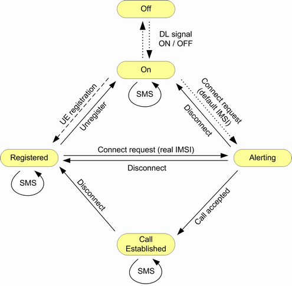

The main CS connection states are described in the following table.
CS state | Description |
|---|---|
"Off" | No signal transmission / no connection to the UE |
"On" | The R&S CMW emulates a UTRAN cell, transmitting a WCDMA signal to which the UE can synchronize. After synchronization the UE can initiate a registration towards the instrument, and the instrument can page the UE to attempt a connection. |
"Registered" | Synchronization and registration have been performed. |
"Alerting" | The R&S CMW or the UE started a call attempt. For a mobile terminated call, the UE is responding (ringing) but the connection is not yet established. For a mobile originated call, the "MOC Alerting Timeout" has not expired yet. This state is skipped for "Connection Type" = "Test Mode". |
"Call Established" | A radio resource control (RRC) connection between the instrument and the UE has been established. It means that dedicated channels are allocated between the R&S CMW and the UE. Depending on the radio access bearer (RAB) configuration, the dedicated channel can consist of the signaling radio bearer (SRB). SRB is used to set up the connection or other RABs, e.g., a reference measurement channel (RMC) or voice channel (AMR). |
Control commands initiated by the R&S CMW or by the UE switch between the listed states. The following figure shows possible state transitions.

- "Signaling"
Displayed, for example, during UE registration, while a short message is sent / received or when the channel changes during a call - "Paging"
Displayed during MTC setup. When an answer from the UE is received, the state changes to "Call Setup in Progress". - "Connecting"
Displayed during MOC and MTC setup - "Incoming Handover / Redirection Preparation"
Displayed while an inter-RAT handover/redirection from another signaling application is requested. - "Incoming Handover / Redirection"
Displayed while an inter-RAT handover/redirection from another signaling application is performed. - "Outgoing Handover / Redirection"
Displayed while an inter-RAT handover/redirection to another signaling application is performed. - "Disconnecting"
The transitions in the figure above are not complete. The "Off" state can be reached from any state by turning off the cell signal ([ON | OFF]). Moreover, incidents like an alerting timeout or a loss of the radio link cause additional transitions. An inter-RAT handover to another signaling application can be performed in the "Call Established" CS state; see "Mobility Management". |